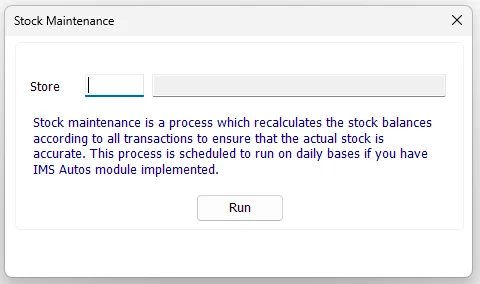

Stock Maintenance
Stock Maintenance rebuilds IMS on-hand quantities from the transaction history. It starts from each item/store opening quantity and reapplies purchases, purchase returns, stock transfers, sales, sales returns, stock adjustments and stock depreciation to restore the calculated stock balance.

Select one store or all stores
Enter a Store ID to rebuild one location. IMS validates the ID and displays the store name beside it.
Leave the Store field blank to run Stock Maintenance for all stores. This is the broader maintenance operation and can take longer because IMS recalculates every applicable item/store balance.
Run Stock Maintenance
- Choose a Store, or leave Store blank for all stores.
- Click Run.
- Review the maintenance warning and confirm that other stock activity has been paused for the targeted stores.
- Click Yes to continue.
- Follow the progress messages while IMS recalculates the stock balances.
- Wait for the Done confirmation, then check the targeted stores' transaction settings before resuming normal activity.
The screen prevents a new run when IMS Autos/maintenance blocking rules are active or when the IMS database connection is unavailable.
What IMS recalculates
IMS rebuilds quantity from the underlying inventory transactions rather than simply trusting the current balance stored in item_prods.qty.
| Stock source | Effect on quantity |
|---|---|
| Opening / First Quantity | Starting balance for the item/store. |
| Purchases | Adds received quantity. |
| Purchase Returns | Subtracts returned quantity. |
| Stock Transfer In | Adds quantity received by the destination store. |
| Stock Transfer Out | Subtracts quantity sent from the source store. |
| Cash / Credit Sales | Subtracts inventory-item sales. |
| Cash / Credit Returns | Adds returned inventory quantity. |
| Stock Adjustments | Applies the signed adjustment quantity. |
| Stock Depreciation | Subtracts depreciated/write-off quantity. |
Maintenance process
The progress indicator represents the main stages of the rebuild:
| Stage | What happens |
|---|---|
| Preparing Stock Maintenance | IMS writes transaction-disabled store settings inside the balance-rebuild transaction. This does not establish that other sessions are blocked during the run. |
| Calculating Stock Movements | IMS combines the applicable inventory movements into a temporary recalculation table by Item Code and Store. |
| Adding Missing Item Store Rows | If a transaction exists for an Item/Store combination that does not yet exist in the stock-balance table, IMS creates the missing row using the item's current cost. |
| Adding Opening Balance | The current quantity is reset to the stored opening/first quantity for the selected scope. |
| Applying Stock Movements | The summed transaction movements are applied to the opening quantity. |
| Finalizing | IMS updates the targeted stores' transaction-enabled settings and commits the rebuild. A single-store run enables that store; an all-store run with no initially active stores enables all stores. Previous settings are not always restored. |
Missing item/store balances
Stock Maintenance also repairs a specific structural case: a valid transaction history can exist for an Item Code and Store even when the corresponding item_prods balance row is missing. IMS creates that missing Item/Store record before it reapplies the opening quantity and transaction movements.
Transaction safety and rollback
The balance recalculation and store-status writes use one database transaction. IMS attempts rollback for failures inside that transaction. Check store transaction settings after completion because the previous enabled/disabled state is not guaranteed to be restored.
The Stock Maintenance activity-log entry is written after the balance transaction commits. An activity-log error can therefore occur after the rebuild has been saved; an error alone does not prove that no changes were committed.
IMS Autos
The Stock Maintenance screen itself is the manual maintenance tool. Where IMS Autos is implemented and configured, the same stock-maintenance requirement can be scheduled as part of the regular automated maintenance process, reducing the need to run it manually as a routine task.